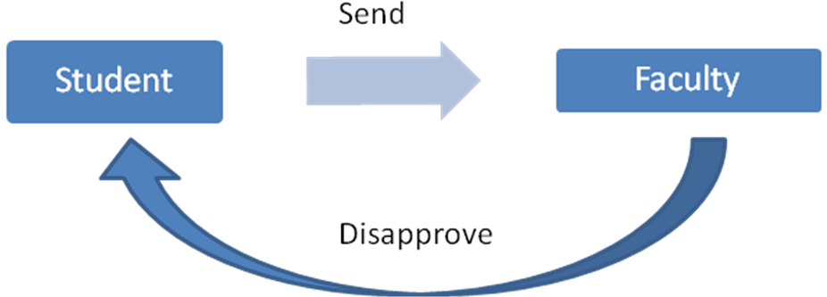
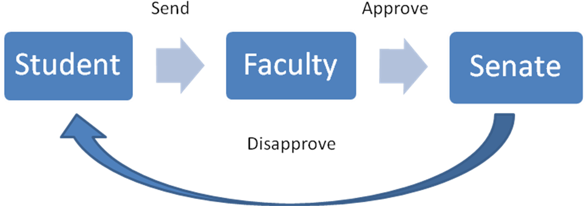
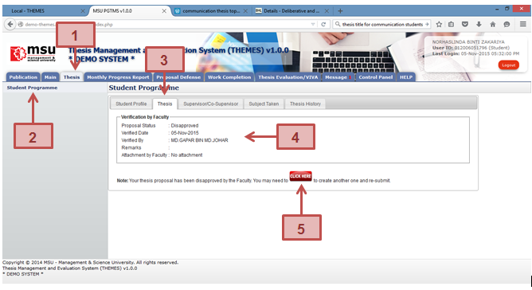

There are 2 scenarios in which the student’s thesis proposal gets disapproved.

In first scenario, the student’s thesis proposal disapproved by the Faculty due to some reason.

In second scenario, the student’s thesis proposal disapproved by the Senate due to some reason.
If there is a case where the thesis proposal does not meet the expectation of the Faculty or the content does not fit the title, the proposal may be rejected or disapproved by the Faculty.
For this scenario, the system will notify the student on the proposal status.

Figure 13: Proposal Disapproved by Faculty
Prerequisite
The student is yet to submit the thesis proposal to the Faculty.
Steps
Warning
None.
Note
None.
Created with the Personal Edition of HelpNDoc: iPhone web sites made easy